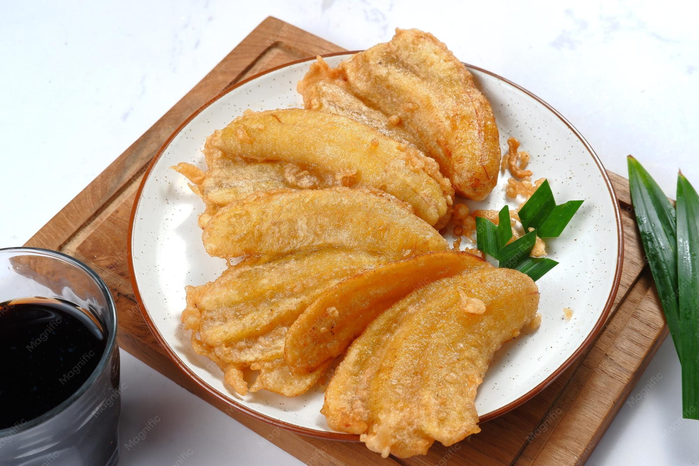
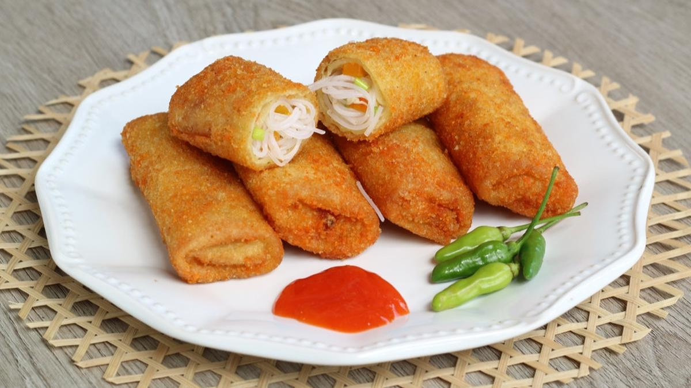
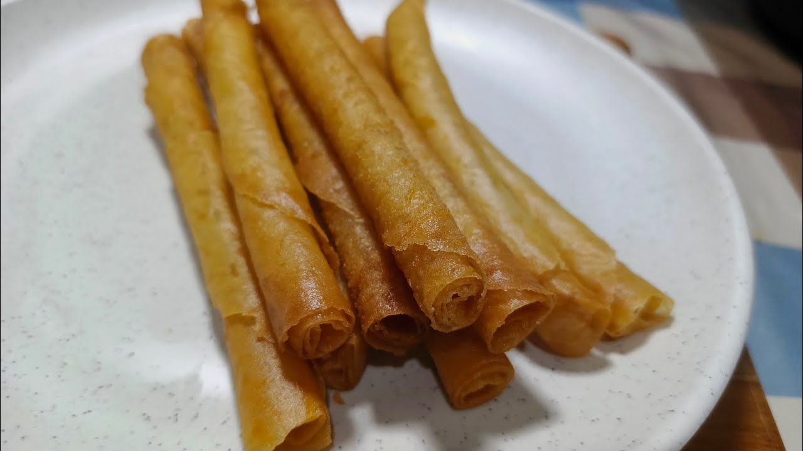
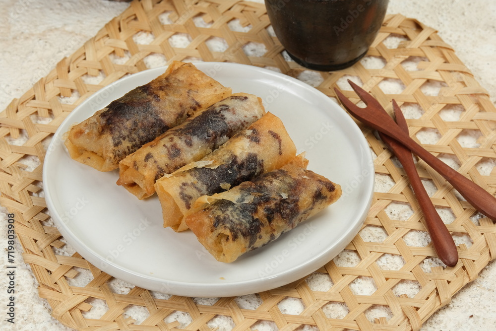

Jajanan Rumahan Indonesia
Lima resep jajanan favorit yang mudah dibuat di rumah.
Koleksi Resep

GorengPisang manis dibalut adonan tepung renyah, digoreng kecokelatan — jajanan klasik yang tak pernah salah.

GorengKulit dadar tipis diisi bihun tumis bumbu, lalu dibalut tepung panir dan digoreng hingga keemasan.

GulungKulit lumpia gulung isu keju meleleh digoreng garing - cocok untuk camilang sore.

PopulerPisang cokelat — pisang dibalut kulit lumpia renyah dengan isian cokelat lumer yang bikin nagih setiap gigitan.
Terbuat dari adonan tepung terigu yang dicampur dengan irisan sayur dengan tekstur renyah dan gurih.